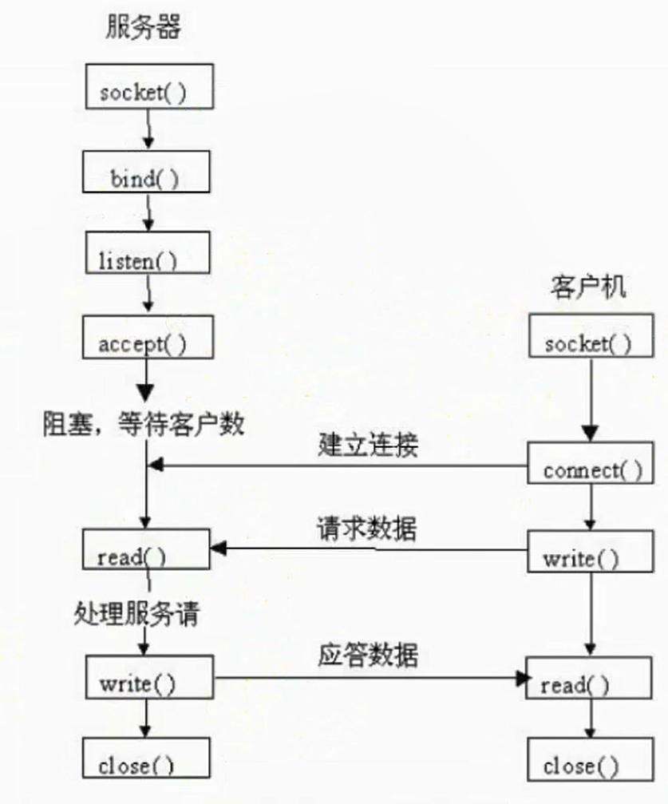

TCP编程
TCP通信过程

TCP三次握手和四次挥手
三次握手
- 第一次握手：Client将标志位SYN置为1，随机产生一个值seq=x，并将该数据包发送给Server，Client进入SYN_SENT状态，等待Server确认；
- 第二次握手：Server收到数据包后标志位SYN=1知道Client请求建立连接，Server将标志位SYN和ACK都置为1，ack=x+1，随机产生一个值 seq=y，并将该数据包发送给Client以确认连接请求，Server进入SYN_RCVD状态；
- 第三次握手，Client收到确认后，检查ack是否为x+1，ACK是否为1,如果正确则将标志位ACK置为1，ack=y+1，并将该数据包发送给Server，Server检查ack是否为y+1，ACK是否为1，如果正确则连接建立成功，Client和Server进入ESTABLISHED状态，完成三次握手，随后Client与Server之间可以开始传输数据了。
- 查看是否有SYN攻击：
$netstat -nap | grep SYN_RECV


四次挥手
- 第一次挥手：Client发送一个FIN，用来关闭Client到Server的数据传送，Client进入FIN_WAIT_1 状态；
- 第二次挥手：Server收到FIN后，发送一个ACK给Client，确认序号为收到序号+1（与SYN相同，一个FIN占用一个序号），Server进入CLOSR_WAIT状态；
- 第三次挥手：Server发送一个FIN，用来关闭Server到Client的数据传输，Server进入LAST_ACK状态；
- 第四次挥手：Client收到FIN后，Client进入TIME_WAIT状态，接着发送一个ACK给Server，确认序号为收到的序号+1，Server进入CLOSED状态，完成四次挥手


TCP报文
- 序号：Seq序号，占32位，用来标识从TCP源端发送的字节流，发送方发送数据对此进行标记
- 确认好：Ack序号，占32位，只有ACK标志位为1时，确认序号字段才有效，Ack=Seq+1
- 标志位 6个
A. URG: 紧急指针(urgent pointer)有效 B. ACK: 确认序号有效 C. PSH: 接收方应该尽快将这个报文交给应用层 D. RST: 重置连接 E. SYN: 发起一个新连接 F. FIN: 释放一个连接
TCP服务端搭建
1、导入模块 import socket 2、创建socket对象 sock = socket.socket(socket_family, socket_type) socket_family: socket.AF_INET 通用网络协议的传播 ipv4 socket.AF_INET6 ipv6 socket.AF_LNIX 使用与UNIX系统内部的传输 socket_type: socket.SOCK_STREAM TCP协议 socket.SOCK_DGRAM UDP协议 3、绑定ip和端口号 sock.bind(("ip", 端口号)) ip地址可以为空，如果为空，表示绑定所有ip 4、设置监听 sock.listen(5) 5、接收信息 con, add = sock.accept() con：接收sock对象，接收对方发送的信息 add：接收ip和端口号 print(con.recv(1024)) 6、关闭套接字 socket.close()
TCP客户端搭建
1、导入模块 import socket 2、创建socket对象 # 参数：是一个元组，第一个元素为要连接的服务器的IP地址（域名也行），第二个参数为端口号 sock = socket.socket(socket_family, socket_type) 这两个参数必须和服务端保持一致 3、连接服务器 sock.connect(("服务器的ip地址", 端口号)) 4、发送信息 sock.send("要发送的信息") print(sock.recv(1024)) 5、关闭套接字 sock.close()
实例
TCP服务端搭建
# -*- coding:utf-8 -*- import socket tcpServer = socket.socket(socket.AF_INET, socket.SOCK_STREAM) tcpServer.bind(("", 8000)) tcpServer.listen(5) print("TCP服务器已开启......") a = 0 while a == 0: con, add = tcpServer.accept() print("con: {}".format(con)) print("add: {}".format(add)) print("{}已经连接成功......".format(add[0])) while True: recvs = con.recv(1024) print(recvs.decode("utf-8")) if recvs.decode("utf-8") == 'q': print("与客户端断开连接......") print("TCP服务器开启中......") break data = input(">>>") con.send(data.encode("utf-8")) if data == 'q': a = 1 break tcpServer.close()
TCP客户端搭建
# -*- coding:utf-8 -*- import socket tcpClient = socket.socket(socket.AF_INET, socket.SOCK_STREAM) tcpClient.connect(("10.15.107.14", 8000)) print("已成功连接到服务器......") while True: data = input(">>>") tcpClient.send(data.encode("utf-8")) if data == 'q': break recvs = tcpClient.recv(1024) print(recvs.decode("utf-8")) if recvs.decode("utf-8") == 'q': break tcpClient.close()